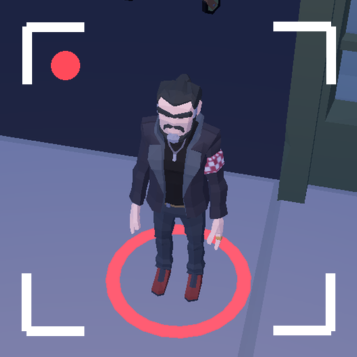

<- all projects

Stakeout
PC
Volume
Live
Watch one street from a rooftop and pick the killer out of the crowd.
Detective June Okafor has been stuck on the night shift since her partner vanished. Now she watches the city from the rooftops with a long lens, while a gang war burns below and a contract killer called the Usher works for both sides. Everyone on the 3D street has a routine, and one of them is the shooter. Watch the night from 21:00 to 23:00, follow suspects, photograph the clues from the witness profile and make the arrest, with only a few rewinds and a short roll of film. There are 25 cases across five districts, endless random cases and a daily stakeout.